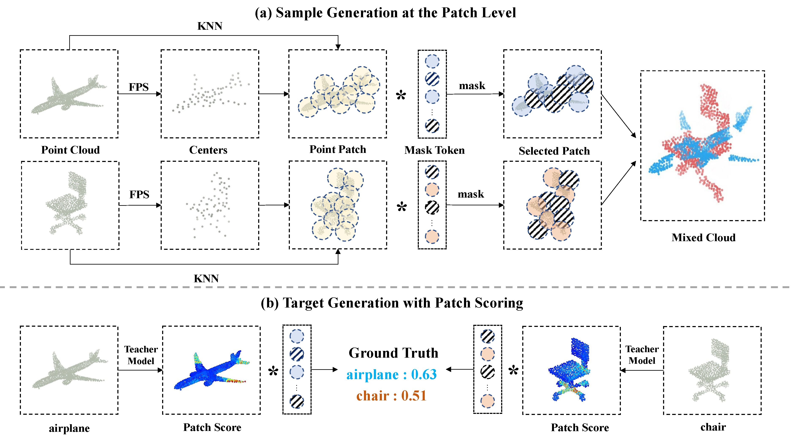

Abstract
Data augmentation is an effective regularization strategy for mitigating overfitting in deep neural networks, and it plays a crucial role in 3D vision tasks, where the point cloud data is relatively limited. While mixing-based augmentation has shown promise for point clouds, previous methods mix point clouds either on block level or point level, which has constrained their ability to strike a balance between generating diverse training samples and preserving the local characteristics of point clouds. The significance of each part component of the point clouds has not been fully considered, as not all parts contribute equally to the classification task, and some parts may contain unimportant or redundant information.

To overcome these challenges, we propose PointPatchMix, a novel approach that mixes point clouds at the patch level and integrates a patch scoring module to generate content-based targets for mixed point clouds. Our approach preserves local features at the patch level, while the patch scoring module assigns targets based on the content-based significance score from a pre-trained teacher model. We evaluate PointPatchMix on two benchmark datasets including ModelNet40 and ScanObjectNN, and demonstrate significant improvements over various baselines in both synthetic and real-world datasets, as well as few-shot settings. With Point-MAE as our baseline, our model surpasses previous methods by a significant margin. Furthermore, our approach shows strong generalization across various point cloud methods and enhances the robustness of the baseline model.
|
BibTeX
@inproceedings{wang2024pointpatchmix,
title={Pointpatchmix: Point cloud mixing with patch scoring},
author={Wang, Yi and Wang, Jiaze and Li, Jinpeng and Zhao, Zixu and Chen, Guangyong and Liu, Anfeng and Heng, Pheng Ann},
booktitle={Proceedings of the AAAI Conference on Artificial Intelligence},
volume={38},
number={6},
pages={5686--5694},
year={2024}
}
|
|